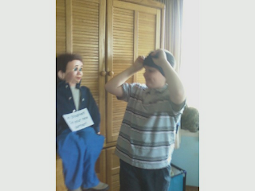
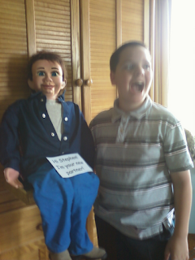

Surprise!
7/29/2012
From Bill Matthews
{kind=link}

I'm enclosing some pictures we took when Stephen got Cody. (Rodger had named him Cody and Stephen likes the name, so he's keeping it.)
I blind-folded Stephen, set Cody next to him and had him remove the blind-fold. It was really funny. It took him a few moments to realize what was going on. Once he did, boy, did he let out a whoop!
What more can I say, but Thank You.
* * * * *
And this just arrived from Stephen:
Thank you for your help in getting Cody. I Like him very much. Today I went over a routine with him. It is called 'Stephen's Story'. (It's about the Stephen in the Bible, not me.) Cody and me had a blast!
"Thanks for fixing him up. I really appreciate it. When I first saw him he put me in mind of a 'Willy.' Then when I found out what his name was, he put me in mind of a 'Cody'. When I first saw him it was on the computer. I said I would like to have him. My Dad said that he thought, 'Praise the Lord.' Thank you again."
Stephen Matthews
* * * * *
And this just arrived from Stephen:
{kind=link}

"Dear Mr. Detweiler:Thank you for your help in getting Cody. I Like him very much. Today I went over a routine with him. It is called 'Stephen's Story'. (It's about the Stephen in the Bible, not me.) Cody and me had a blast!
"Thanks for fixing him up. I really appreciate it. When I first saw him he put me in mind of a 'Willy.' Then when I found out what his name was, he put me in mind of a 'Cody'. When I first saw him it was on the computer. I said I would like to have him. My Dad said that he thought, 'Praise the Lord.' Thank you again."
Stephen Matthews
{kind=link}